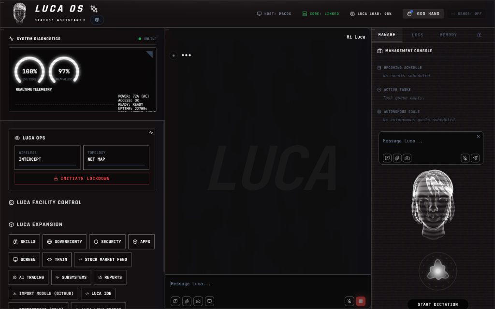

Unleash the full power of your M1/M2/M3 chip. Luca runs locally with Metal optimization for blazing fast token inference and VoiceHUD latency under 20ms. Full integration with macOS Accessibility and System Events.

Direct integration with CoreML and Metal Performance Shaders. Luca leverages every GPU core for real-time visual reasoning and language processing.
Native bridge for system events. Luca can control native apps like Spotify, Reminders, and Calendar via secure AppleScript and Accessibility APIs.
Proactive power management. The Luca kernel intelligently suspends neural weights when inactive, ensuring zero impact on MacBook mobility.
Luca can be deployed via headless installation for automation servers or power user workflows.
brew install --cask luca-os